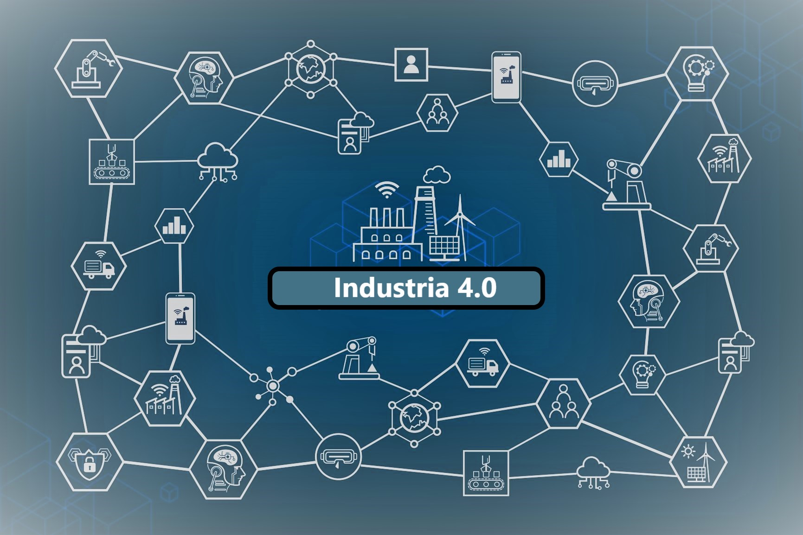

Introdução à Indústria 4.0
A Indústria 4.0, também conhecida como a Quarta Revolução Industrial, está transformando a maneira como os processos industriais são conduzidos. Esta nova era é caracterizada pelo uso intensivo de tecnologias digitais e pela integração de sistemas cibernéticos com a Internet das Coisas (IoT). Dispositivos inteligentes são fundamentais para a Indústria 4.0, pois permitem a automação e a coleta de dados em tempo real. Um dos dispositivos mais versáteis e utilizados é o ESP32
O que seria um microcontrolador?
Um microcontrolador é um tipo de dispositivo eletrônico integrado (chamado de circuito integrado ou chip) que consiste em um processador central, memória e periféricos de entrada e saída, todos incorporados em um único chip. Ele é projetado para controlar funções específicas em dispositivos e sistemas eletrônicos. Dentre alguns se destacam?

Arduino
O Arduino é uma plataforma de hardware de código aberto amplamente utilizada para prototipagem e desenvolvimento de projetos eletrônicos. Criado inicialmente em 2005 pelo italiano Massimo Banzi e seu grupo de colegas no Ivrea Interaction Design Institute, o Arduino foi projetado para ser acessível, fácil de usar e flexível o suficiente para atender a uma ampla variedade de aplicações.

Esp32:
ESP32 é uma poderosa plataforma de desenvolvimento de código aberto para a Internet das Coisas (IoT). Desenvolvido pela Espressif Systems, o ESP32 é uma evolução do popular ESP8266, oferecendo mais recursos e maior capacidade de processamento.

Raspberry Pi Pico
Embora tecnicamente seja um microcontrolador, o Raspberry Pi Pico é uma placa de desenvolvimento que combina simplicidade e potência, ideal para projetos que exigem conectividade e processamento

PIC Microcontroladore
Os microcontroladores da série PIC são amplamente utilizados em uma variedade de aplicações industriais, automotivas e de consumo, devido à sua confiabilidade e eficiência energética.
Conhecendo um microcontrolador
Assista ao vídeo abaixo para entender melhor sobre um microcontrolador!
A utilização dos microcontroladores para criação de dispositivos na Salus!
Olá! Aqui é a Salus, especializada em saúde e segurança no trabalho, com um foco especial em saúde mental. Estamos na vanguarda da Indústria 4.0, desenvolvendo dispositivos inovadores que utilizam microcontroladores para promover ambientes de trabalho mais seguros e saudáveis. Nossa missão é integrar tecnologia de ponta com práticas de saúde mental para otimizar o bem-estar dos trabalhadores industriais. Estamos comprometidos em criar soluções que não só melhoram a eficiência, mas também cuidam do aspecto humano dentro das fábricas do futuro.
Principais características dos dispositivos:
- Tecnologia de ponta
- Transparencia
- Suporte
- Qualidade
- Funcionalidade
Aplicações dos dispositivos nos tempos atuais
Atualmente, na Salus, aplicamos nossa expertise em saúde e segurança no trabalho de diversas maneiras inovadoras, com um foco específico em saúde mental e tecnologia de microcontroladores para a Indústria 4.0. Aqui estão alguns tópicos-chave de como estamos impactando o cenário atual:
- Dispositivos Inteligentes
- Análise de Dados
- Benchmarking e Melhoria Contínua
- Desenvolvimento de Wearables
- Gestão Proativa de Riscos